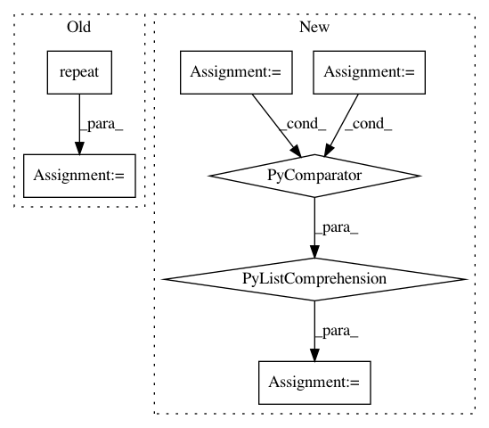

3047dc9b500266d8197139fad5ef3a8a4a459985,test/torchaudio_unittest/functional/batch_consistency_test.py,TestFunctional,assert_batch_consistency,#TestFunctional#Any#Any#,16
Before Change
// batch the input and run
torch.random.manual_seed(seed)
pattern = [batch_size] + [1] * tensor.dim()
computed = functional(tensor.repeat(pattern), *args, **kwargs)
self.assertEqual(computed, expected, rtol=rtol, atol=atol)
def assert_batch_consistencies(
After Change
// Compute items separately, then batch the result
torch.random.manual_seed(seed)
items_input = batch.clone()
items_result = torch.stack([
functional(items_input[i], *args, **kwargs) for i in range(n)
])
// Batch the input and run
torch.random.manual_seed(seed)
batch_input = batch.clone()
In pattern: SUPERPATTERN
Frequency: 3
Non-data size: 7
Instances
Project Name: pytorch/audio
Commit Name: 3047dc9b500266d8197139fad5ef3a8a4a459985
Time: 2021-02-28
Author: toastedjcaw@gmail.com
File Name: test/torchaudio_unittest/functional/batch_consistency_test.py
Class Name: TestFunctional
Method Name: assert_batch_consistency
Project Name: AIRLab-POLIMI/mushroom
Commit Name: ff55647673a7279b47d1268699839b92aca3e953
Time: 2021-02-10
Author: carlo.deramo@gmail.com
File Name: mushroom_rl/algorithms/value/dqn/rainbow.py
Class Name: RainbowNetwork
Method Name: forward
Project Name: cornellius-gp/gpytorch
Commit Name: cea478600970228f6b8dd12b067facde3d5d261f
Time: 2019-05-08
Author: balandat@fb.com
File Name: gpytorch/models/exact_gp.py
Class Name: ExactGP
Method Name: get_fantasy_model